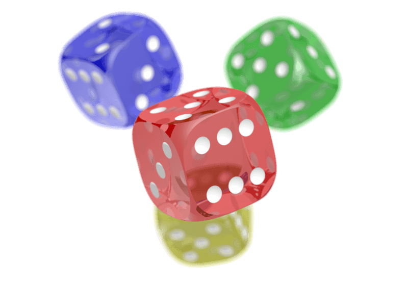

PNG image format, True-color
Lossless only (221 kb)

PNG image format, 8-bit
Optimized to 8-bit, compressed (46.7 kb)

WebP image format, Lossless
Lossless only (151 kb)

WebP image format, Lossy
Alpha lossless, main quality 90, sampling 4:2:0 (74.7 kb)

JPEG image format
Alpha replaced by white background, sampling 4:4:4 (48.4 kb)

JNG image format
Alpha quality 80, main quality 80, sampling 4:4:4 (65.9 kb)
Opened with special library and polyfill, context menu not supported...
DO NOT SAVE! It's generated as PNG from JNG image file in browser.